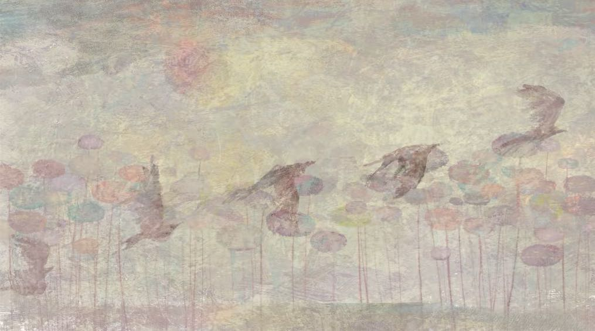

从东边出发——杂树

原乡
每个人心中总有一块土地，是他终生溯洄以求的。称它是故乡也好，是梦土也罢，这条归乡路不是长夜漫漫、更行更远，就是在地图上根本找不到名字，只是脑海里一处花卉争艳的安静小镇。人的尊贵与悲哀，都在寻求的过程里一再叠唱。
战争与动乱逼得大批人民逐水草而居，这是生不逢时，不可抗逆。然而，即使是太平盛世，生命一旦进入萌芽阶段，年轻孩子动不动就要挥别乡土。社会是一个有机复合体，自然会出现富裕与贫穷、文明与原始等差异；人向往富裕与文明，也是这复合体运作之下的结果。它需要不断地有新血带给它活力，也不断地改变了这些人的面目。年轻人只要十多年时间，不难在荣华之都建立一个家，挣得一席社会地位。然而，这也注定了他永远回不了父母的家。哪怕台北到花莲随时有列车来回，台东到兰屿也有小飞机，可是，除了一年几次探亲，回得去吗？
另一种乡，却是无亲可探的，甚至不曾见过。它只是一处魂牵梦系之地，连地名都还没有取。到底哪里像“祇树给孤独园”呢，还是迦南美地？像夹岸桃花数百里的桃花源呢，还是充满笙歌与醇酒的奥林匹斯山？连自己也不知道。宗教与文学不断营造梦土吸引人的灵魂，可是现实社会又不断以柴米油盐拉扯人的肉身。现世乡梓已经很难回得去了，心中的梦土又风雨飘摇。无怪乎人愈老，叹息的时候愈多，也只有愈老，才知道不能解的情结比唾手可得的快乐还长。
回不去的原乡当然不是美事，美的是把人生当成半途。